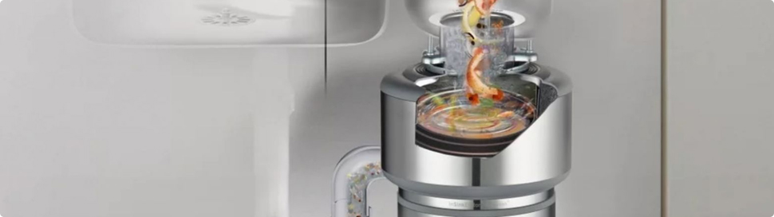
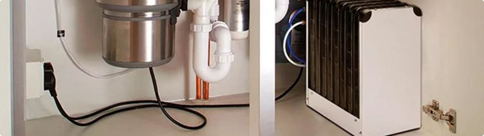
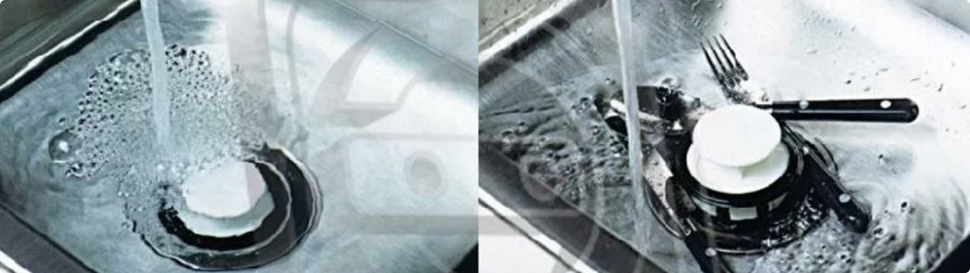

Выброс пищевых мусора в раковину, остатки еды с тарелок и прочие загрязнения, попадающие в слив, ведут к засорению канализации. Небольшие засоры устраняются самостоятельно с использованием специальных средств или инструментов, но часто приходится обращаться за помощью к профессиональным мастерам. Для предотвращения проблем с канализацией на кухне устанавливают измельчитель бытовых отходов.
Принцип работы
Данный вид техники также называют диспоузером. Он состоит из вращающегося металлического диска и кулачков или ножей, которые и дробят отходы. Средняя скорость столика составляет 1500-2000 оборотов за одну минуту. Под действием центробежной силы частицы пищевых отходов отбрасываются к кулачкам и перерабатываются.
Запускаться оборудование может запускаться двигателем или потоком воды. Рабочий цикл выполняется до того момента, пока все загрязнения не будут спущены в канализацию. На кольце расположен подрезающий механизм, необходимый для защиты бытовой техники от различных волокон. Охлаждение системы производится водой.
Основные виды оборудования
- Механические. В основе конструкции – ножи, которые приводятся в движение путем воздействия потока воды. Благодаря расположению элементов, измельчитель пищевых отходов безопасен для человека. Подключение к электричеству не требуется.
- Электрические. Наличие электропитания обязательно. Вместо ножей – кулачки, которые дробят отходы. Отличается повышенным уровнем шума из-за работы двигателя, но есть специальные защитные элементы, которые нормализуют данный показатель.
- С непрерывной загрузкой. Мусор подается в измельчитель бытовых отходов в раковине по мере их появления. Просто нужно включить оборудование и начать загружать мусор в сливное отверстие (включение осуществляется за счет выведенной пневмокнопки).
- С порционной загрузкой. Модели такого типа имеют специальный отсек накопительного типа. После того, как он будет заполнен, его включают и перерабатывают то, что в нем накопилось. Такое оборудование приводится в действие либо кнопкой, либо поворотом горловины в сливе.
Механические модели считаются более эффективными, чем электрические, так как отходы измельчаются, а не дробятся. Что касается способа подачи, то предпочтение стоит отдать вариантами с непрерывной загрузкой: периодическое накопление может стать причиной неприятных запахов и нарушения гигиены раковины и кухни в целом.
Преимущества устройства
- Диспоузеры помогают справляться с различными загрязнениями и поддерживать на кухне чистоту и порядок. Теперь не придется переживать за запах из мусорного ведра.
- Устройство легко ставится и извлекается при необходимости, обладает небольшими размерами, длительное время работает без перебоев.
- Диспоузеры являются универсальными и подходят даже для самых небольших моек.
- Техника предотвращает появление засоров в канализации и улучшает экологию за счет предварительной переработки мусора.
- Оборудование абсолютно безопасно, рабочие элементы никак не могут навредить человеку. Для запуска устройства нужно просто нажать на кнопку.
- Изготавливаются из нержавеющей стали высокого качества. Минимальный срок службы одной единицы составляет 5 лет, но есть и такие марки, которые гарантируют 20 лет бесперебойной работы и более.
- Не требуется специального ухода или обслуживания. Элементы самоочищающиеся, ножи не требуют заточки.
Благодаря большому ассортименту можно подобрать оптимальный вариант энергоресурса для работы измельчителя бытовых отходов – вода или электричество. При этом затраты все равно будут малы: потребление жидкости за день возрастет примерно на 3-5 литров, электричества – на 100 Вт. Что касается уровня шума, то в механических машинах он меньший. Звук электрических двигателей придется немного потерпеть только во время работы.
